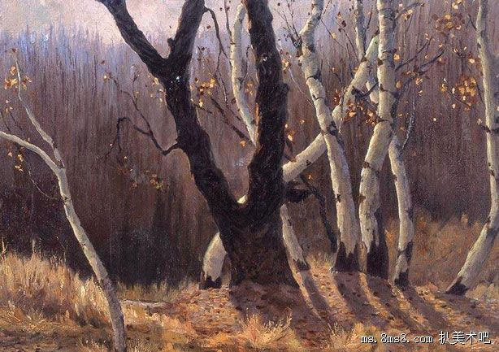

光对于色彩来说起到至关重要的作用，没有了光也就看不到色彩了，而我们所说的绘画中的光，有顺光、逆光、侧光等。其中最难表现的当属逆光了，因为逆光中的物体大部分是暗部，用色彩来表现就比较难了。但是如果你能够把逆光中的色彩表现的很完美，那其独特的艺术性就会展现无余。
首先我们在进行逆光表现的时候，要弄清楚写生对象的色彩特征，尤其是光影的微妙变化要搞清楚，光线从哪个方位照射进来，从景物的哪一部分进入到逆光的特征当中，都要清晰明了，有助于我们进行色彩表现。最直观的感受是，受光部位特别的少，但就是这极少的光显得特别重要，是我们重点刻画的对象。从亮部过渡到暗部，中间会有很多的色彩层次，如果不能够把这些色彩层次表现出来，那就会让我们感到画面的暗部很空洞，缺少色彩变化。 光线在逆光中的变化很重要，我们面对的景物其固有色会显得非常不明确，这就需要平时多观察，多练习，才能够在作画当中快速的解读出色彩关系。画色彩感觉很重要，我们说一个人的色彩感觉好，其实也能够体现在作画当中，如果逆光下的风景其暗部光线照射很不明显的情况下，就需要用我们的色彩感觉来处理画面。
逆光中的景物，一般在景物的边缘结合处，或者平坦的地面上会有光的存在，而且光一般比较强烈，而与之相对比的背光部位会受到反光的折射有不同程度的光影变化，在色彩上会出现冷暖交替的现象，对于冷暖色的协调把握也是画好逆光风景的重要内容。这就形成了一种色彩表现现象，背光部位色彩光影丰富，而受光的部位则是色调单一。掌握好这些基本的规律才能够在绘画过程中柔韧有余的表现画面。